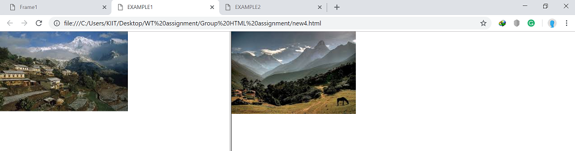
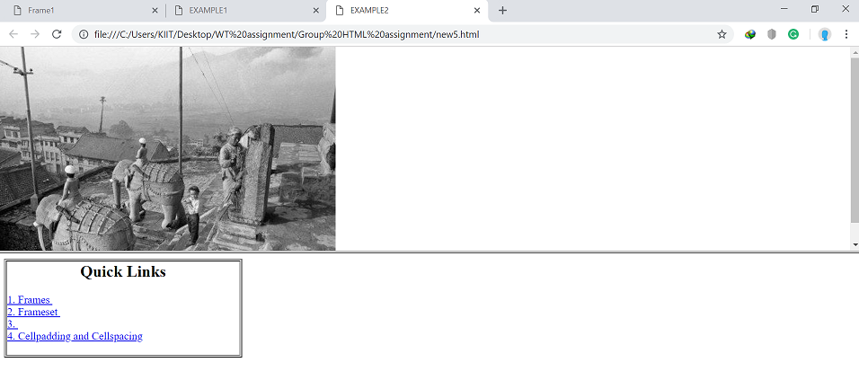
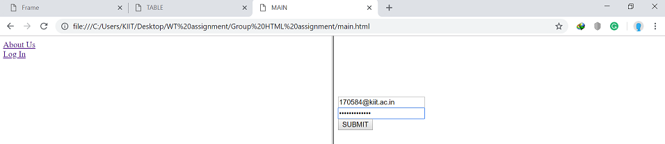
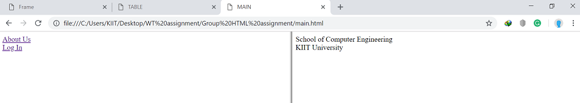

A webpage may be divided into several blocks called frames. Each frame may display a seperate webpage.
Frames are used to have the menu in mone frame and the content in another frame.
An Example is given below:
< html>
< head>
< title>EXAMPLE1< / title>
< / head>
< FRAMESET COLS="40%,60%">
< FRAME SRC="jpg2.jpg" scrolling="No">
< FRAME SRC="JPG3.jpg">
< / FRAMESET>
< / HTML>
With the output given as:

|
< FRAMESET> defines the characteristics of the frames such as number of frames to be created, orientation, width, height.
Nested frames are possible.
An Example is given below:
< html>
< head>
< title>EXAMPLE2< / title>
< / head>
< FRAMESET ROWS="*,*">
< FRAME SRC="jpg1.jpg">
< FRAME SRC="new2.html">
< / FRAMESET>
< / HTML>
With the output given as:

|
Links which is discussed in another chapter can also be used to link pages and images between frames.
An Example is given below:
Main.html
< HTML>
< HEAD>
< TITLE>MAIN< / TITLE>
< / HEAD>
< FRAMESET COLS="50%,50%">
< FRAME SRC="right.html" name="right">
< / FRAMESET>
< / HTML>
left.html
< HTML>
< HEAD>
< TITLE>left< / TITLE>
< / HEAD>
< BODY>
< a HREF="abt.html" target="right">About Us< / a>< br>
< a HREF="login.html" target="right">Log In< / a>
< / BODY>
< / HTML>
|
right.html
< HTML>
< HEAD>
< TITLE>Right< / TITLE>
< / HEAD>
< BODY>
Right Frame
< / BODY>
< / HTML>
|
abt.html
< HTML>
< HEAD>
< TITLE>About Us< / TITLE>
< / HEAD>
< BODY>
School of Computer Engineering
< BR>
KIIT University
< / BODY>
< / HTML>
|
login.html
< HTML>
< HEAD>
< TITLE>Login< / TITLE>
< / HEAD>
< BODY>
< FORM>
< INPUT TYPE="TEXT" NAME="UID">< BR>
< INPUT TYPE="PASSWORD" NAME="PWD">< BR>
< BUTTON TYPE="SUBMIT" VALUE="SUBMIT">
< / FORM>
< / BODY>
< / HTML>
|
With the output given as:


|
You can also open the Main page here:
|